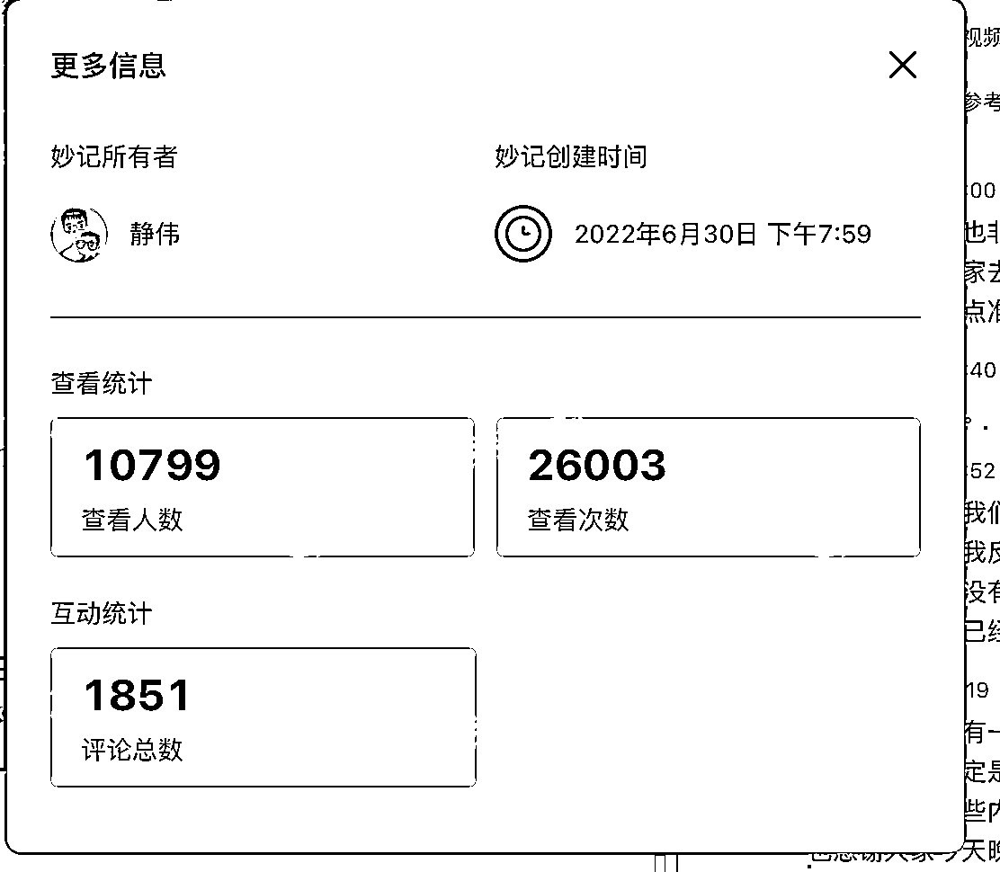

来源：https://ro14u4yq4i.feishu.cn/docx/LE3Ad03QAoTJWWxZ8jBcFBKXnEy
大家好呀，我是最懂新手的男人——郭晓文。
今天的内容，即是和大家聊聊我这三年和生财有术的故事，也给大家留下了一些正确使用生财有术的锦囊。
当你焦虑的时候，当你不知道怎么使用生财有术的时候，不妨拿出这篇文章看看，相信会对你有所帮助。
三年前，我作为一个搞钱新手加入生财有术。
三年后，我不仅自己搞成了好多项目，也通过做社群、训练营、做分享的形式，带许多人成功跨出了搞钱第一步，也在生财留下了10篇精华帖。
可以说，我这三年的成长和发展，都和生财有术密切相关。
源于生财，就应该回馈给生财。
今天，我就把自己这三年和生财的故事，分享给大家。
希望，有更多的人，可以通过正确使用生财有术，发展起来。
我很期待。
2020年，是我刚加入生财的第一年，也是我毕业的第三年。
刚加入生财有术的我，就像是那刚进大观园的刘姥姥一样。
生财里面的圈友，以及圈友们分享的项目，经历，太过精彩、太过丰富，一时之间让我眼花缭乱。
当时的我，和朋友聊天，经常是这种语气：
对的，当时的我，产生了一种错觉：
强调一下，这是错觉。
现在回想起来，当时的我沉浸在这种错觉中，自顾自的说这「我圈友怎么怎么样」的时候，朋友心里，大概都会觉得我很飘。
但当时的我，肯定是感受不到自己是「飘在空中」的状态。
于是，刚进生财的前四个月，我每天只是沉迷于刷帖、见圈友，毫无建树。
这段经历让我意识到：
生财锦囊：
「抬头看天之后，要记得低头赶路。」
于是，在飘了四个月后，我开始尝试落地了，要开始做项目了。
当时，我选了几个精华贴的项目开始实操。
结果发现：
「卧槽，这些项目看起来挺简单的，但做起来怎么这么难啊……」
这个原理，我在「https://t.zsxq.com/0cterLU8z【新人参加见面会后必读】如何正确利用见面会获得的信息？」这篇帖子里面说过。
当我们只能用有限的时间去展示自己的时候，大多数人都会选择在有限的时间里，去展示自己的高光片段，展示自己项目好的一面。
但作为搞钱新手的我，其实意识不到这一点。
我只会对着这些高光时刻，大喊哇塞，只会以为项目真的只有好的一面，而低估了项目的难度，忽略了项目不好的一面。
于是，产生了「我也行」的错觉。
而这个错觉，在我开始实践之后，瞬间破灭。
遇到了问题，也不知道该怎么去找解决方案。
（当时还没有小航海，没有教练，没有索引可以搜索项目相关的资料）
这段经历让我意识到：
生财锦囊：
自己看着帖子瞎搞无果后，我在一名圈友的推荐下，了解到了抖音小程序项目，并且加入了另一名生财圈友专门做抖音小程序项目的社群学习。
交了1999的学费后，又经历了暗淡无光的三个月……
诶，前面不是说，新手要找到人带，会更容易出成果吗？
对，是更容易，更容易，只是更容易而已。
为什么我还是做不好呢？
是当时加的圈友的社群带的不好吗？非也。当时同个社群有很多人学得很好，做得很优秀。
是抖音小程序这个项目不好吗？非也。当时正值抖音小程序的风口期……
答案是我不好。
当时抖音小程序有很多种玩法，每一种玩法，都有人赚到钱。
而我的做法，是：搞了7个账号，做了4种玩法。
今天A玩法有人爆了，有圈友分享，我就加大在A玩法的投入度。
明天B玩法有人爆了，有圈友分享，我就加大在B玩法的投入度。
……
这样的情况，整整持续了接近三个月。
结果就是，我什么玩法都不精通，什么玩法都赚不到钱。
后来，还是社群里一名大哥告诉我：
当我听从大哥的指导，真正专注于一种玩法之后，不到10天的时间，我就达成了日入过千的小成就。
我这才反应过来：
「原来我之前，甚至从未在一种玩法上，持续投入10天以上的时间……」
只顾着反复横跳了。
也是这段经历，才有了后来我一直和大家说的：
「想赚到钱，你并不需要看那么多帖子，并不需要了解那么多信息，并不需要精通那么多玩法，你只需要把『一个项目的一种玩法』理解准确，执行到位，就可以了。」
这个逻辑，也被我用在后来在生财视频号带货小航海的分享里面。
那次分享到今天，已经有上万人看了，好评也很多。
里面最核心的，其实也就是上面那句话。
https://shengcaiyoushu01.feishu.cn/minutes/obcnws3ukj4royr2ef811hk7

生财锦囊：
贪多嚼不烂。你并不需要那么多信息，不需要精通那么多玩法，你只需要搞定一个项目的一种玩法，就足够你赚到钱了。
通过在生财里面了解到的项目，通过在优秀圈友的带领下，做出了成绩。
我第一时间想的就是：源于生财，就要回归生财。
所以，我马不停蹄的写了一篇分享贴，把我做出成果的玩法，尽可能详细的在生财有术分享了出来。
（https://t.zsxq.com/Uzv3Nrv 抖音小程序依旧可以稳定日入过千的玩法，实操手册）
这次分享，主要就是分享我的喜悦，也希望能帮到更多和我一样想赚钱却不知从何下手的人。
没想到的是：
当时的我，并不懂什么叫个人IP，也没有自己的知识付费产品。
于是，我就向自己正在学习的那个小程序社群的群主，要了分销权限，有圈友有需求，我就往里面推荐（毕竟自己就是在这里学到的）。
再往后，有一些圈友们觉得还是不够，需要更详细的指导。
于是，我就象征性的收了些费用，开始用我的思路，设计了搞笑号玩法的训练营。
那次训练营，也帮助挺多圈友做出了自己第一个百万播放的视频。
于我而言，那次训练营虽然没收几个人，赚不了多少钱。但这次经历，让我得以更近距离的接触到不同的搞钱新手跨出第一步的过程，更了解新手，也让我初步形成了自己的培训框架和影响力。
这段经历让我意识到：
生财锦囊：
生财不仅仅是学习的图书馆，还是让你展示自己的舞台。让自己变得强大，站到舞台中间也是一种不错的选择。
后来，我就形成了只要有新的收获，跑通新的项目，就会跑到生财写个帖子分享的习惯。（即使我在那个时候已经没有招生了）
（https://t.zsxq.com/uZnyr7I 抖音月均播放量4个亿的短视频创作心法）
后来搞笑号的玩法，变现效率变得很低了。
我就在生财挖掘新的项目。
挖着挖着，就挖出了抖音情感号的项目。
借着自己对抖音的理解，以及生财已有的资料，我很快就跑通了抖音情感号这个项目。
于是，我就又写了个帖子发到星球里面和大家分享。
（https://t.zsxq.com/RRrfqJE 【操作手册】公众号1个多月时间做到几乎篇篇5w+，进阶版「manchuan」玩法）
没曾想，亦仁主动找到我，说觉得这个项目不错，能帮到很多圈友，看要不要合作一期实战日。
我在被亦仁主动邀请的惊喜之余，接下了这次合作。
于是，就有了情感号的三期实战日合作。
当时抖音情感号的训练营口碑也非常好，期间我也鼓励跟着一起做的学员分享，也产出了好几篇精华贴。
这次合作，让我的训练营体系进一步的完善，也进一步提高了我的影响力，让我第一次达成了月入10w，更让我离「最懂新手的男人」更进了一步。
这次经历让我意识到：
虽然现在没有实战日了，但有了覆盖面更广的小航海。
小航海成就了很多学员，也成就了很多教练。
这些教练，其实也都是平时积极在生财输出，为生财做贡献，才被官方看到进而被选中的。
生财锦囊：
后来，其实就是一直重复这个过程。
从执行的角度，生财一直是我的赚钱武器库。
我需要搞定流量，我就能在生财找到描述各大平台流量规律和获取流量方式的帖子，也能找到对应的高手。
我需要搞定产品，我就能在生财找到各种产品相关的帖子，也能找到对应的高手。
我需要项目……
大家感兴趣，我后续再写一篇《搞钱新手的生财有术使用说明》，展开讲讲。
然后就是我努力做项目：
于是，就产出了：
10篇精华贴作者，听起来挺唬人的。
但，我写了三年。
每一篇帖子背后，还有我无数个日夜的思考和践行。
把时间线往回拉三年，我也不过是个在风口项目上苦熬三个月，都拿不到结果的纯纯的搞钱白痴。
今天这篇帖子，是我对自己和生财有术这三年来缘分的总结。
我也希望，能借这个帖子，缓解一下大家刚进来，因眼花缭乱而焦虑的心：
抬头看天，低头赶路，美好的未来，就会飞奔而来。
前提是，你得有耐心，不抱怨，不放弃，日拱一卒。
与你共勉。
欢迎交流。
公众号：郭晓文